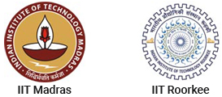

WHAT IS GATE ?
Graduate Aptitude Test in Engineering (GATE) is an examination that primarily tests the comprehensive understanding of various undergraduate subjects in engineering and science for admission into the Masters Program and Recruitment by some Public Sector Companies. The GATE score of a candidate reflects the relative performance level of a candidate. The score is used for admissions to various post-graduate education programs (e.g. Master of Engineering, Master of Technology, Master of Architecture, Doctor of Philosophy) in Indian higher education institutes, with financial assistance provided by MHRD and other government agencies. Recently, GATE scores are also being used by several Indian public sector undertakings for recruiting graduate engineers in entry-level positions. It is one of the most competitive examinations in India.


GATE Examination is conducted jointly by the seven Indian Institutes of Technology at Mumbai, Delhi, Guwahati, Kanpur, Kharagpur, Chennai, Roorkee & Indian Institute of Science at Bengaluru on behalf of the National Coordination Board - GATE, The Department of Higher Education, Ministry of Education (MoE), Government of India.
DURATION AND EXAMINATION TYPE
The examination is of 3 hours duration, and contains a total of 65 questions worth a maximum of 100 marks. The examination for all the papers is carried out in an online Computer Based Test (CBT) mode where the candidates are shown the questions in a random sequence on a computer screen. The questions consist of some Multiple Choice Questions or MCQs (four answer options out of which only ONE is correct, which has to be chosen). Remaining questions may be of Multiple Select Questions or MSQs (four answer options out of which ONE or MORE than ONE is/are correct, hence correct options need to be chosen) and/or Numerical Answer Type questions or NATs (answer is a real number, to be entered via an on-screen keypad and computer mouse).
QUESTIONS AND MARKING SCHEME
The examination will consist of totally 65 questions, segregated as One-mark and Two-mark questions. Out of 65 questions, 10 questions will be from General Aptitude (Verbal and Numerical ability) and 55 questions will be Technical, based on the Paper chosen. The General Aptitude section will have 5 One-mark questions and 5 Two-mark questions, accounting for about 15% of total marks. The Technical section and Engineering Mathematics section will combinedly have 25 One-mark questions and 30 Two-mark questions, accounting for about 85% of total marks. Further, all the sections may have some Multiple Choice Questions or MCQs, while remaining questions may be Multiple Select Questions or MSQs and/or Numerical Answer Type questions or NATs.
The examination awards negative marks for wrong MCQ answers. Usually, 1/3rd of original marks will be deducted for wrong MCQ answers (i.e. -0.33 for wrong One-mark answers and -0.66 for wrong Two-mark answers) while there are no negative marks for MSQs and NATs. Also there is NO partial credit for MSQs and NATs.
SUBJECT-WISE DISTRIBUTION
GATE Computer Science Engineering Exam has total 65 questions and out of 65 questions, 10 questions will be from General Aptitude (Verbal and Numerical ability) and 55 questions will be Technical, which consist around 11-12 core topics from computer engineering coursework.
The topics are listed as follows:
- Engineering Mathematics
- Discrete Mathematics & Graph Theory
- Design & Analysis Algorithms
- Programming & Data Structure
- Digital Logic
- Computer Organization
- Theory of Computation
- Compiler Design
- Operating Systems
- Database Managment Systems
- Computer Networks
PREVIOUS YEAR QUESTION PAPERS.
We have put together all of the previous years GATE CSE question papers and created this website in such a way that you can solve the entire previous year exam papers with the correct marking scheme and time barrier. You can see how well you performed in the mock test attempt as your result will be displayed at the end of the exam.
Click the following button to select the desired question paper:
Click Here...